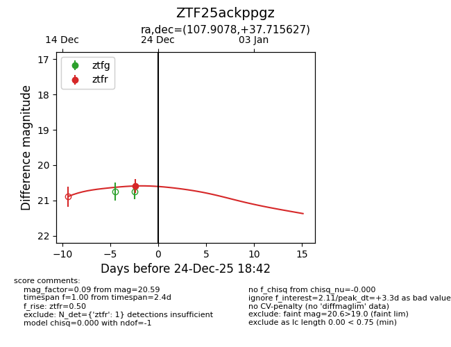
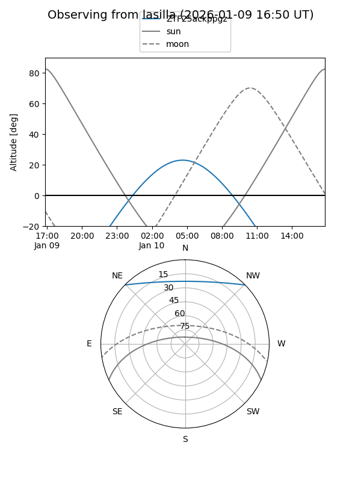
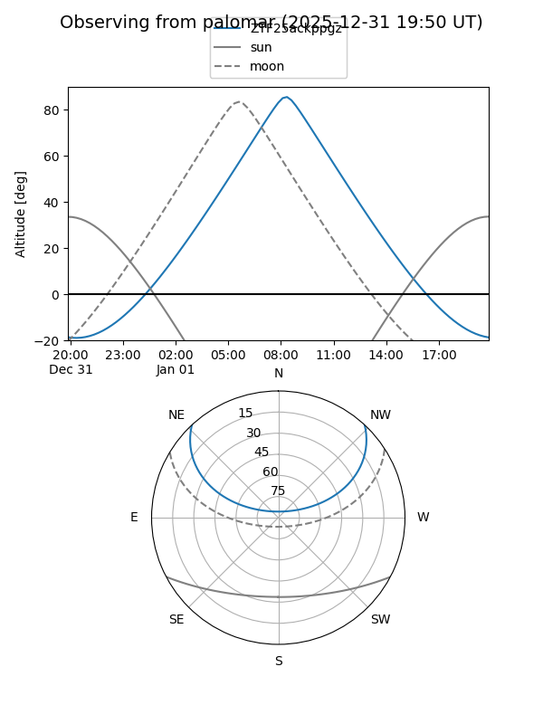

ZTF25ackppgz
Target ZTF25ackppgz at 2026-01-09 12:49
Aliases and brokers:
FINK: link
Lasair: link
ALeRCE: link
alt names
ZTF25ackppgz (ztf,fink_ztf)
Coordinates:
equatorial (ra, dec) = 107.9078,+37.71563
equatorial (HMS+DMS) = 07:11:37.87,+37:42:56.26
galactic (l, b) = (179.8820,+19.93149)
Flags:
Photometry:
last ztfr=20.59
1 ztfr detections
Lightcurve

Visibility


Additional plots